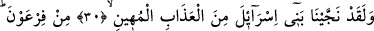
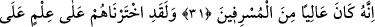
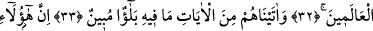
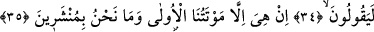
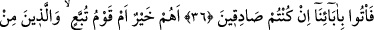
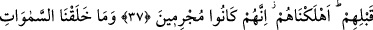
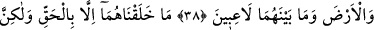
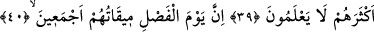
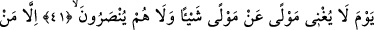
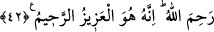

BİZ
GÖKLERİ YERİ
EĞLENCE OLSUN DİYE
YARATMADIK
30. Andolsun biz, İsrâil oğullarını o alçaltıcı azâbdan kurtardık.
31. Firavun’dan. Çünkü o, (insanları ezip) ululanan, sınırı aşanlardan biri idi.
32. Andolsun biz, onları bir bilgiye göre âlemlere üstün kıldık.
33. Onlara, içinde açık bir sınav bulunan âyetler verdik.
34. Şunlar (Kureyş kâfirleri) de diyorlar ki:
35. “İlk ölümümüzden sonra bir şey yoktur. Biz diriltilecek değiliz.”
36. Doğru söylüyorsanız, atalarımızı getirin.
37. Onlar mı hayırlı, yoksa Tübba‘ kavmi ve onlardan önce gelen(kavim)ler mi?
Suç işledikleri için biz onların hepsini helâk ettik.
38. Biz gökleri, yeri ve bunlar arasında bulunanları, oyun ve eğlence olsun diye
yaratmadık.
39. Onları sadece gerçek bir sebeple, (hikmetli bir gaye ile) yarattık. Fakat
onların çoğu bilmiyorlar.
40. (Hakkın bâtıldan ayrılacağı) Hüküm günü, hepsinin varacağı gündür.
41. O gün dostun dosta hiçbir faydası olmaz. Ve onlara yardım da edilmez.
42. Ancak Allâh’ın acıdığı kimseler (kurtulur). Şüphesiz O, üstündür,